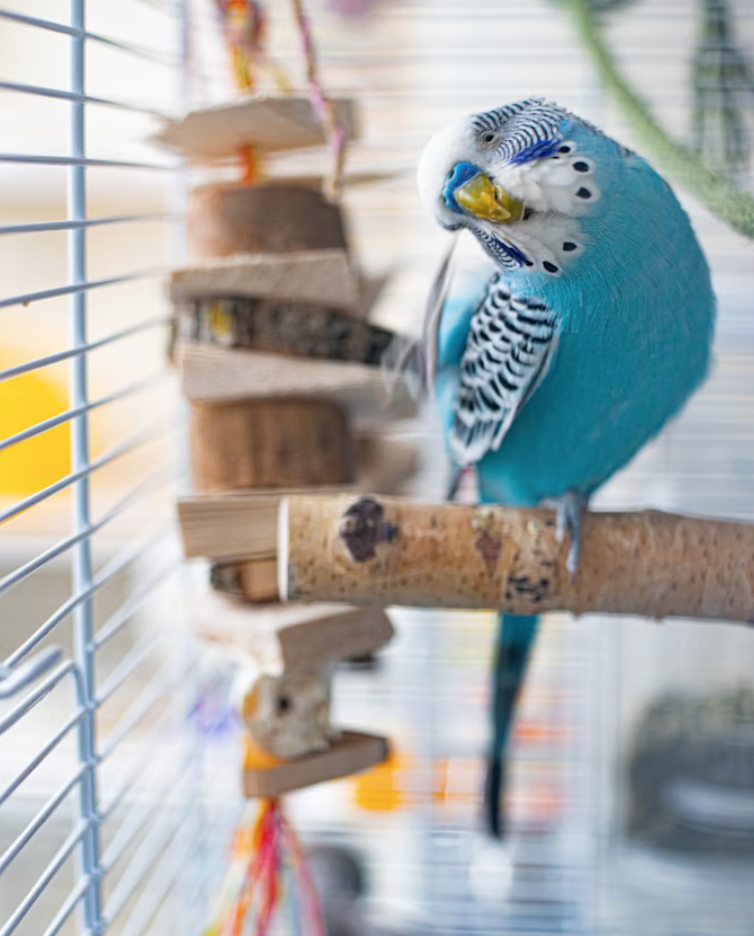

Birds are amazing and each breed is unique in its own way, particularly when it comes to their relational needs and well-being. Unfortunately, birds can experience sadness and depression just like humans. A number of root causes may be responsible for your bird's depression such as an illness (either physical or mental), losing its companion, or increasingly becoming bored. Some signs to help identify if your bird is experiencing depression may include the following:
Be sure to tell your veterinarian if you see signs of any of these symptoms. Just like many illnesses, identifying and treating the symptoms earlier may drastically increase the lifespan of your birdie.
